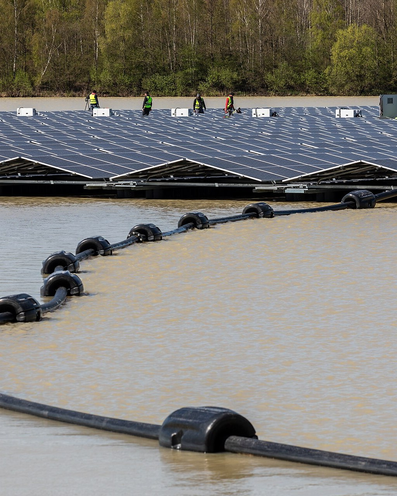
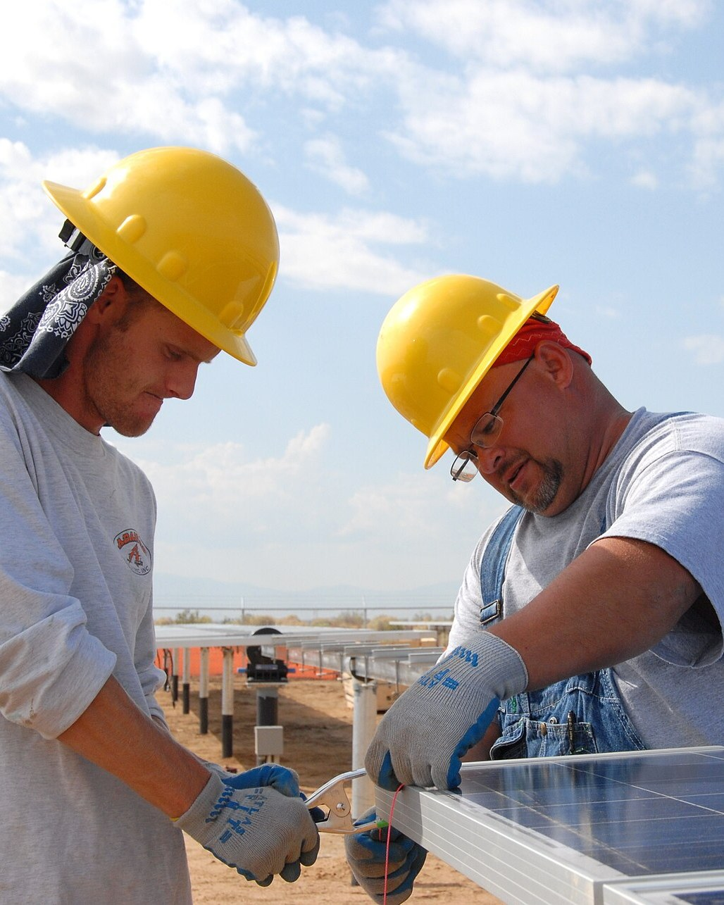

We take renewable energy projects from go/no-go to bankable. Advisory, engineering, and independent due diligence for developers, financiers, and landowners, from first screening to financial close.
Most advisors cover one gate. EcoEnergy carries a project through the full sequence, or steps in at any gate to verify someone else's work. Each discipline below is one decision your project cannot skip.
A screening study answers go or no-go before real money moves. One site walk, the constraints mapped, the fatal flaws named. The cheapest study we sell is the one that stops a bad project, and the ones that pass move to feasibility with their risks already on the table.
Site visit and constraint mapping Indicative layout and yield Grid proximity and interconnection options Land status and tenure check Go or no-go recommendation, with the reasons in writing
Conceptual study, pre-feasibility, then full feasibility, with yield, grid, land, and cost each tied to a named source. A feasibility study is not a brochure. It is the document every later reviewer will attack, so we build it to survive the attack.
Conceptual layout and technology selection Energy yield assessment Grid connection study Environmental and social screening Capex and opex estimate with basis of estimate Project schedule and decision memo
Basic design fixes the concept. Detail design makes it buildable. The gate closes with a ready-for-construction package a contractor can price without guessing, across solar, mini hydro, and the grid works between them.

Basic design and specifications Detail design drawings Equipment schedules and bill of quantities Tender and contract support Ready-for-construction package
We audit the developer's yields, contracts, and permits, then report what a credit committee can act on. A red-flag review settles "should we look further" before the full diligence spend. For owners and acquirers, the same discipline runs in reverse: we find the problems before the other side's advisors do.

Red-flag review Technical and commercial due diligence Contract and permit audit Construction and drawdown monitoring Reporting in the format credit committees read
Consent schedules are built backward from your financing date, each authority requirement tracked from first submission to final sign-off. Alongside them, every risk is priced and assigned to the party best able to carry it, so the register, the contracts, and the model all say the same thing.
Authority engagement plan Consent schedule tied to the financing date Stakeholder register and engagement record Risk register with pricing and allocation Alignment check: register, contracts, model
Every input traces to a study, a contract, or a quote. A lender's analyst can test any line without calling us first. That is what bankable means: not optimism, traceability. The project's whole spine leads here.
Financial model build or audit Input traceability register Sensitivity and scenario runs Debt sizing and covenant checks Bankability review, in writing
A screening study answers go or no-go in weeks. A red-flag review answers "should we lend" before the full diligence spend.
Contact EcoEnergy · contact@ecoconsultancy.services